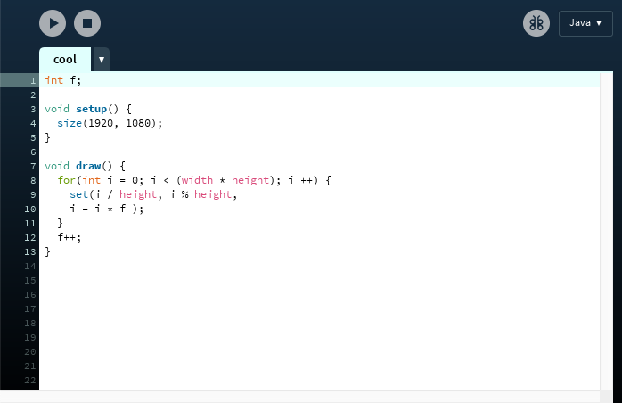

For our final project we created electro-acoustic and ambient track. The song incorporates elements of glitch, noise, and other distorted sonic artifacts. Inspired by artists including Yasunao Tone and Fennesz, we produced a calming experimental sound. ‘Before we fall asleep’ was meant to start off calm and ambient then slowly incorporate more glitch elements as the song progresses. The concept coming from speculating what happens to the mind before one falls asleep, the glitch slowly envelops the calming drone.
The track was produced using FL Studio, without previously working in this software it took a little time figuring out its functionalities, but eventually after experimentation, we were able to get the hang of it. We used a combination of FL studio and Audition to edit samples. The drone was created by taking a harsh noise texture and stretching it over time. We then increased the wetness of the audio and played the chords in a synth.
Complementing the track is an animated video featuring moire patterns that shift coded in processing. The code was created with a for loop, using an algorithm that generated a glitching effect.